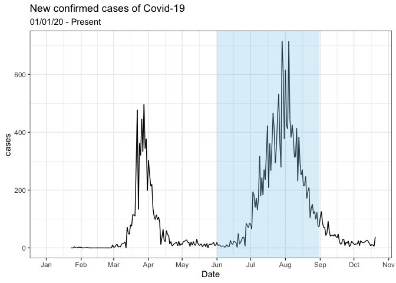

covidseasonality package aims to assess the novel coronavirus seasonality effects by examining the cases in each hemisphere as cold weather migrates to the Northern Hemisphere. Also, it improves its corresponding app’s accessibility and readability.
The Shiny App
A preview of the app:

Get Started
This is a some basic examples what the package does
Access inbuilt datasets such as countries in the Northern and Southern Hemisphere and Tropics
library(covidseasonality) library(tibble) Northern_hemis # countries in the Northern Hemisphere #> # A tibble: 100 x 1 #> country #> <chr> #> 1 Afghanistan #> 2 Albania #> 3 Andorra #> 4 United Arab Emirates #> 5 Armenia #> 6 Austria #> 7 Azerbaijan #> 8 Belgium #> 9 Bangladesh #> 10 Bulgaria #> # … with 90 more rows
Takes inbuilt data sets and plot daily cases against date with shaded area indicating winter months. Now you can extend this to include countries in the world.
library(dplyr) join_data <- covidseasonality::country_list %>% filter(country == "Australia") %>% covidseasonality::join_data() join_data %>% covidseasonality::plot_countries_hemis()

Provide summaries of total cases and total cases per 100,000 of the country’s population.
join_data(join_data) %>% summary_table()
| Country | Total cases | Total cases per 100k | average cases | average cases per 100k |
|---|---|---|---|---|
| Australia | 49,507,172 | 195,184 | 101 | 0 |
It can also launch the app with a single function. Furthermore, there are also inbuilt functions that controls the inputs of the app.
# not run # covidseasonality::launch_app()
Learn more
Read vignette("covidseasonality-intro") for more details on how to use the package.